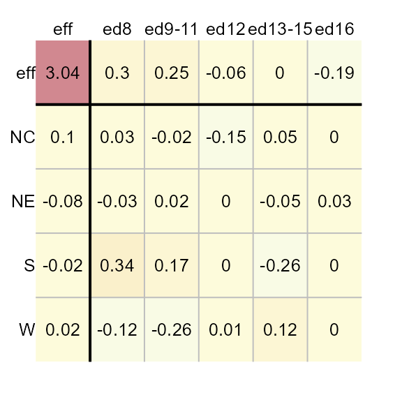
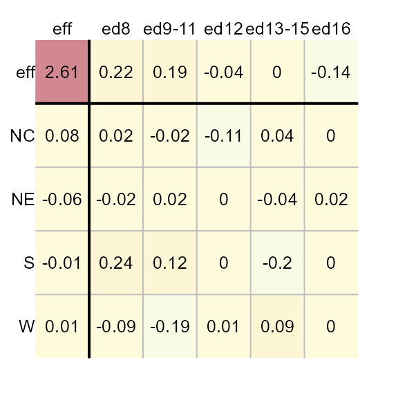
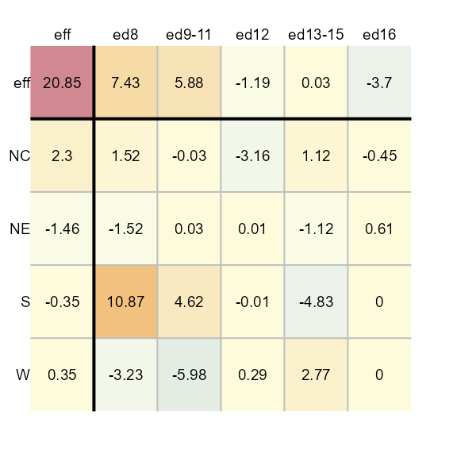
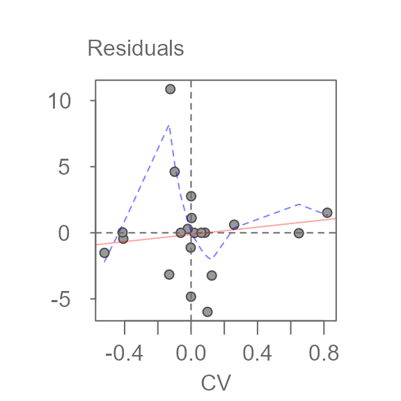
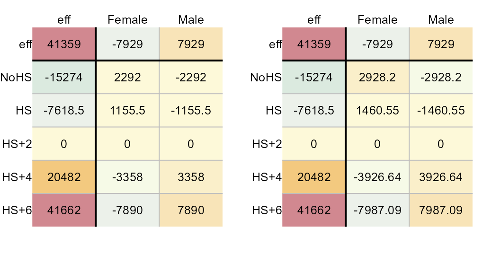

The median polish basics
The median polish is an exploratory technique used to extract effects from a two-way table. As such, a median polish can be thought of as a robust version of a two-way ANOVA; the goal being to characterize the role each factor has in contributing towards the expected value. It does so by iteratively extracting the effects associated with the row and column factors via medians.
For example, given a two-way table where 1964 through 1966 infant
mortality rates1 (reported as count per 1000 live births) is
computed for each combination of geographic region (NE,
NC, S, W) and each level of the
father’s educational attainment (ed8, ed9-11,
ed12, ed13-15, ed16), the median
polish will first extract the overall median value, then it will
smooth out the residual rates by first extracting the median
values along each column (thus contributing to the column factor), then
it will smooth out the remaining residual rates by extracting
the median values along each row (thus contributing to the row factor).
The smoothing operation is iterated until the residuals stabilize. The
workflow is highlighted in the following figure.
The left-most table is the original data showing death rates. The second table shows the outcome of the first round of polishing (including the initial overall median value of 20.2). The third and forth table show the second and third iterations of the smoothing operations. Additional iterations are not deemed necessary given that little more can be extracted from the residuals. For a detailed step-by-step explanation of the workflow see here.
The resulting model is additive in the form of:
\[ y_{ij} = \mu + \alpha_{i} + \beta_{j} +\epsilon_{ij} \] where \(y_{ij}\) is the response variable for row \(i\) and column \(j\), \(\mu\) is the overall typical value (hereafter referred to as the common value),\(\alpha_{i}\) is the row effect, \(\beta_{j}\) is the column effect and \(\epsilon_{ij}\) is the residual or value left over after all effects are taken into account.
Each factor’s effect is displayed in the top row and left-most
column. In the above example, the region is assigned to the rows and the
father’s educational attainment is assigned to the columns. The father’s
educational attainment can explain about 11 units of
variability (7.58 - (-3.45)) in death rates vs
4 units of variability for the region (2.55 -
(-1.5)). As such, the father’s educational attainment is a
larger contributor to the expected infant mortality than the regional
effect.
Implementing the median polish
This package’s eda_polish is an augmented version of the
built-in medpolish available via the stats
package. A key difference is that eda_polish takes the
input dataset in long form as opposed to medpolish which
takes the dataset in the form of a matrix. For example, the infant
mortality dataset needs to consist of at least three columns: one for
each variable (the two factors and the expected value).
grd <- c("ed8", "ed9-11", "ed12", "ed13-15", "ed16")
dat <- data.frame(region = rep( c("NE", "NC", "S", "W"), each = 5),
edu = factor(rep( grd , 4), levels = grd),
perc = c(25.3, 25.3, 18.2, 18.3, 16.3, 32.1, 29, 18.8,
24.3, 19, 38.8, 31, 19.3, 15.7, 16.8, 25.4,
21.1, 20.3, 24, 17.5))
head(dat)
region edu perc
1 NE ed8 25.3
2 NE ed9-11 25.3
3 NE ed12 18.2
4 NE ed13-15 18.3
5 NE ed16 16.3
6 NC ed8 32.1The median polish can then be executed as follows:
The function will output the table as a plot along with a list of
components that are stored in the M1 object. If you want to
suppress the plot, you can set the parameter
plot = FALSE.
The M1 object is of class eda_polish. You
can extract the common values, and the row and column effects as
follows:
M1$global
[1] 20.85M1$row
region effect
1 NC 2.3000
2 NE -1.4625
3 S -0.3500
4 W 0.3500M1$col
edu effect
1 ed8 7.43125
2 ed9-11 5.88125
3 ed12 -1.19375
4 ed13-15 0.03125
5 ed16 -3.70000Ordering rows and columns by effect values
To order the row and column effects by effect values, set the
sort parameter to TRUE.
M1 <- eda_pol(dat, row = "region", col = "edu", val = "perc", sort = TRUE)Applying a transformation to the data
You can have the function re-express the values prior to performing
the polish. For example, to log transform the data, pass the value
0 to p.
M1 <- eda_pol(dat, row = "region", col = "edu", val = "perc", p = 0)
If you are re-expressing the data using a negative power, you have
the choice of adopting a Tukey transformation
(tukey = TRUE) or a Box-Cox transformation
(tukey = FALSE). For example, to apply a power
transformation of -0.1 using a Box-Cox transformation, type:
M1 <- eda_pol(dat, row = "region", col = "edu", val = "perc", p = -0.1, tukey = FALSE)
Defining the statistic
By default, the polishing routine adopts the median statistic. You
can adopt any other statistic via the stat parameter. For
example, to apply a mean polish, type:
M1 <- eda_pol(dat, row = "region", col = "edu", val = "perc", stat = mean)
If you are familiar with a two-way ANOVA, you’ll note that the computed effects from a mean polish match those computed from a two-way ANOVA:
model.tables(aov(perc ~ region + edu, dat))
Tables of effects
region
region
NC NE S W
1.815 -2.145 1.495 -1.165
edu
edu
ed8 ed9-11 ed12 ed13-15 ed16
7.575 3.775 -3.675 -2.250 -5.425The eda_polish plot method
The list object created by the eda_pol function is of
class eda_polish. As such, there is a plot method created
for that class. The plot method will either output the original polished
table (type = "residuals"), the diagnostic plot
(type = "diagnostic"), or the CV values
(cv).
Plot the median polish table
You can generate the plot table from the median polish model as follows:

Adjusting color schemes
Removing common effect from color palette range
By default, the range of color palettes are defined by the range of
all values in the table. This includes the common value. To
prevent the common value from affecting the distribution of color
palettes, set col.com to FALSE.
plot(M1, col.com = FALSE)
Note how the distribution of colors is maximized to help improve our view of the effects. This view makes it clear that the father’s educational attainment has a greater effect than the region.
Removing row/column effects from color palette range
If you want the plot to focus on the residuals by maximizing the
range of colors to fit the range of residual values, set
col.eff = FALSE.
plot(M1, col.eff = FALSE)
Note that setting col.eff to FALSE does not
prevent the effects cells from being colored. It simply ensures that the
range of colors are maximized to match the full range of residual
values. Any effect value that falls within the residual range will be
assigned a color.
changing color schemes
By default, the color scheme is symmetrical centered on
0. It adopts R (version 4.1 and above) built-in
"RdYlBu" color palettes. You can assign different built-in
color palettes via the colpal parameter.
You can list available colors via the hcl.pals()
function.
If you want to limit the output to divergent color palettes, type:
hcl.pals(type = "diverging")
[1] "Blue-Red" "Blue-Red 2" "Blue-Red 3" "Red-Green"
[5] "Purple-Green" "Purple-Brown" "Green-Brown" "Blue-Yellow 2"
[9] "Blue-Yellow 3" "Green-Orange" "Cyan-Magenta" "Tropic"
[13] "Broc" "Cork" "Vik" "Berlin"
[17] "Lisbon" "Tofino"For example, we can assign the "Green-Brown" color
palette as follows. (We’ll remove the common value from the range of
input values to maximize the displayed set of colors).
plot(M1, colpal = "Green-Brown", col.com = FALSE)
The default classification scheme is symmetrical and linear, centered
on 0. If you want to maximize the use of colors, regardless
of the range of values, you can set col.quant to
TRUE.
plot(M1, col.quant = TRUE)
You’ll note that regardless of the asymmetrical distribution of
values about 0, each cell is assigned a unique color
swatch.
When adopting a quantitative color classification scheme, you might want to adopt a color palette that generates fewer unique hues and more variation in lightness values. For example,
plot(M1, col.quant = TRUE, colpal = "Green-Orange")
Adjusting text
You can omit all labeled values from the output by setting
res.txt to FALSE.
plot(M1, res.txt = FALSE)
Likewise you can omit all axes labels by setting
label.txt to FALSE. This may prove useful when
applying a median polish to a large grid file.
plot(M1, res.txt = FALSE, label.txt = FALSE)
You can adjust the text size via the res.size,
row.size and col.size parameters for the value labels
(effects and residuals), the row names, and the column names
respectively. For example, to set their sizes to 50% of there default
value type:
plot(M1, row.size = 0.6, col.size = 0.6 , res.size = 0.6)
Exploring diagnostic plots
The plot method will also generate a diagnostic plot of
the residuals vs comparison values (CV).
plot(M1, type = "diagnostic") 
$slope
cv
1.3688This plot shows the relationship between the CV values and the residuals. A bisquare robust line is fitted to the data (light red line) along with a robust loess fit (dashed blue line). The function will also output the line’s slope. This slope can be used to help estimate a transformation of the data, if needed.
To generate your own plot, simply extract the cv
component from the M1 list. The cv component
is a dataframe that stores the residuals (first column) and CV values
(fourth column). The first few records of the data frame are shown
next.
head(M1$cv)
perc region.eff edu.eff cv
1 -3.15625 2.3000 -1.19375 -0.1316846523
2 -0.00625 -0.3500 -1.19375 0.0200389688
3 0.00625 -1.4625 -1.19375 0.0837342626
4 0.29375 0.3500 -1.19375 -0.0200389688
5 -4.83125 -0.3500 0.03125 -0.0005245803
6 1.11875 2.3000 0.03125 0.0034472422The diagnostic plot helps identify any interactions between both effects. If interaction is suspected, then the model is no longer a simple additive model; The model needs to be augmented with an interactive component of the form:
\[ y_{ij} = \mu + \alpha_{i} + \beta_{j} + kCV +\epsilon_{ij} \]
where \(CV\) = \(\alpha_{i}\beta_{j}/\mu\) and \(k\) is a constant that can be estimated from the slope generated in the diagnostic plot.
A truly additive model is one where the changes in the response
variable from one level to another level remain constant. For example,
given the bottom-left matrix of initial response values, changes in the
response variable from level a to level b are
constant regardless of the row effect. For example. going from
a to b at level z elicits a
change in response of 6 - 3 = 3. This is the same observed
change in values from a to b at levels
x and y (4-1 and 5-2
respectively). At all three row levels, the change in expected values
from a to b is the same: in increase of
3 units. Likewise, changes in response values between rows
x and y or y and z
are constant across all levels of the column effect (1
respectively). The additive effect can be observed in an interaction
plot as shown on the right. The column effect is plotted along the
x-axis, the row effect is mapped to each line segment.
Original dataset. No interaction between effects
Parallel lines indicate no interaction between the effects. A median polish generates the following table and diagnostic plot:
Median polished data showing no interaction between effects
You’ll note the lack of pattern (other than a flat one) in the accompanying diagnostic plot.
Now, let’s see what happens when an interaction is in fact present in the two way table.
Original data. Interaction between effects
Note how the lines are no longer parallel to one another in the interaction plot. Now let’s run the median polish and generate the diagnostic plot.

Median polished data showing interaction between effects
You’ll note the upward trend in residuals with increasing comparison values. This is usually a good indication of interacting in the effects. Another tell-tell sign is the pattern observed in the residuals with low residuals and high residuals in opposing corners in the table.
If an interaction is observed, you should either include the interaction term in the additive model, or you should seek a re-expression that might help alleviate any interaction between the effects.
If you choose to include the interaction term in your model, the coefficient \(k\) can be extracted from the slope generated in the diagnostic plot.
If you choose to re-express the data in the hopes of removing any interaction in the data, you can try using a power transformation equal to \(1 - slope\) (slope being derived from the diagnostic plot).
The infant mortality dataset does not suggest interaction between effects in the diagnostic plot. Next, we’ll look at another dataset that may exhibit interaction between its effects.
Another example: Earnings by sex for 2021
The dataset consists of earnings by sex and levels of educational attainment for 2021 (src: US Census Bureau).
-
NoHS: Less than High School Graduate -
HS: High School Graduate (Includes Equivalency) -
AD: Some College or Associate’s Degree -
Grad: Bachelor’s Degree
edu <- c("NoHS", "HS", "HS+2", "HS+4", "HS+6")
df1 <- data.frame(Education = factor(rep(edu,2), levels = edu),
Sex = c(rep("Male", 5), rep("Female",5)),
Earnings = c(31722, 40514, 49288, 73128,98840,20448,
26967, 33430, 50554, 67202))The original table (prior to running the median polish), looks like this:
eda_pol(df1, row = "Education", col = "Sex", val = "Earnings" , maxiter = 0, adj.mar = TRUE)
2021 Average earnings for the US.
Next, we’ll run the median polish.
M2 <- eda_pol(df1, row = "Education", col = "Sex", val = "Earnings" , plot = FALSE)Next, we plot the final table and the diagnostic plot.
plot(M2, adj.mar = TRUE, res.size = 0.8, row.size = 0.8, col.size = 0.8) # reduce font size
plot(M2, "diagnostic")
$slope
cv
0.9410244Here’s what we can glean from the output:
- Overall, the median earnings is $41,359
- Discrepancy in earnings due to different levels in education attainment covers a range of $85,037 while that for different sexes covers a range of $15,858.
- Some of the residuals are quite large suggesting that there may be much of the earnings data that may not be explained by the row and column effects. The residuals explain $29,391 of the variability in the data.
- The diagnostic plot suggests a strong interaction between the sex effect and the education effect. For example, this means that differences in earnings between sexes depends on the level of educational attainment.
- The slope between residuals and CV values is around 0.94.